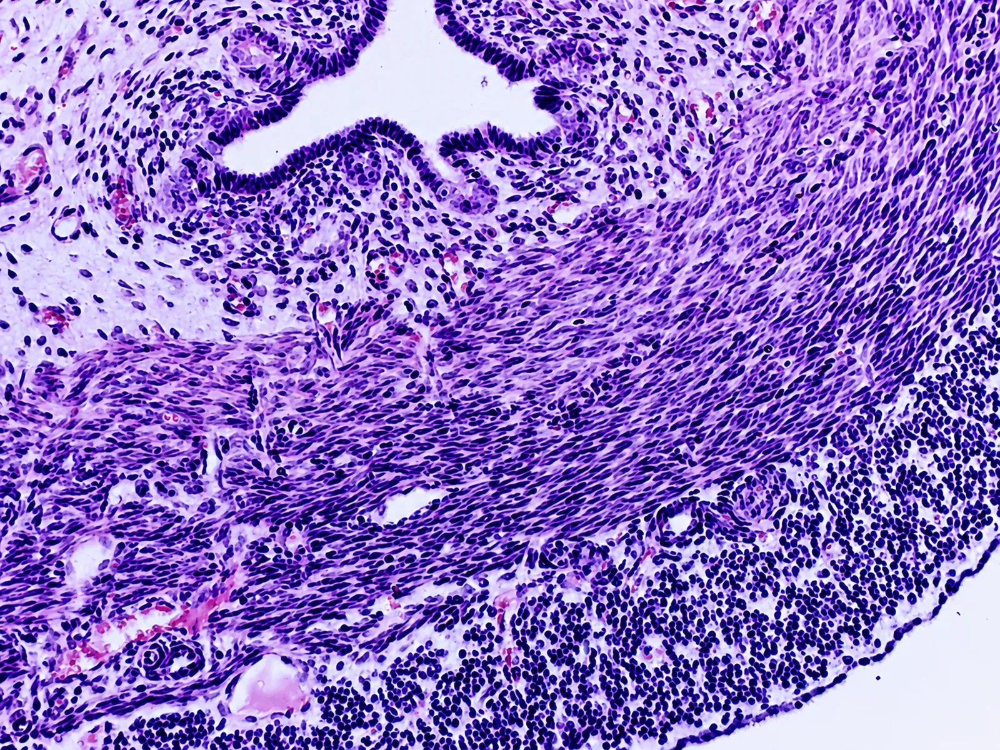
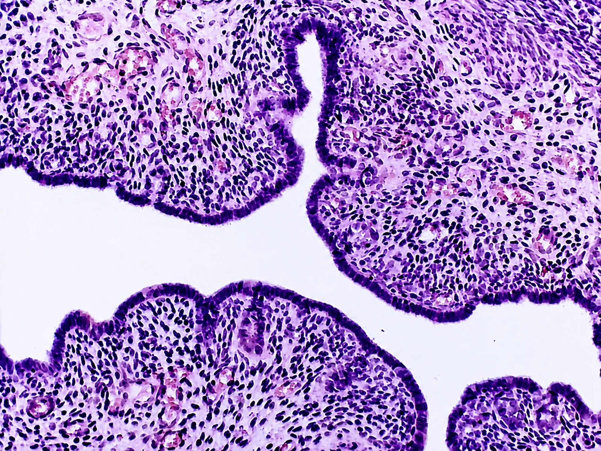

Lâmina 71 · Sistema reprodutor
Colo do útero


Toque na imagem para ampliar. No computador, use as setas do teclado para trocar de imagem.
Lâmina 71 · Sistema reprodutor


Toque na imagem para ampliar. No computador, use as setas do teclado para trocar de imagem.